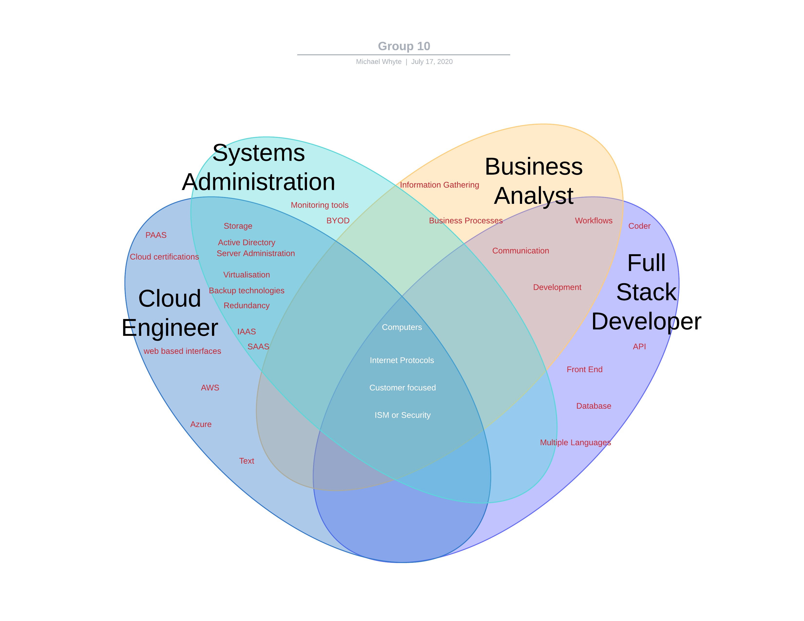

The future of CALM members
Ideal Jobs
Conrad is looking towards becoming a Business Analyst
Aldo is looking towards becoming a System Administrator
Michael is looking towards becoming a Cloud Engineer
Lucas is looking towards becoming a Full Stack Developer
Within the Venn Diagram are the similarities and differences of each group members ideal job.
| Student | Jobs | Commonalities | Diferences | Career Plans |
|---|---|---|---|---|
| 1. Conrad | Business Analyst | Deals with people Analyse problems, identify priorities Provide support and work with application developers. | Manage business stakeholders Deliver high standard business requirements. | Similar to Aldo in a sense that both identify and solve issues. |
| 2. Aldo | System Admin | Work with cloud-based technologies Deals with people Perform high level analysis | Experience with monitoring tools such as HP Site Scope. 24/7 365 monitoring and support Experience with scripting (Powershell, Python) | Similar to Michael’s both involve cloud techMicrosoft Windows - 2,699 |
| 3. Michael | Cloud Engineer | Both work with infrastructure Deals with people Works with IP & Networking technologies | Certification paths Work 99% through web based interfaces | Very similar to Aldo |
| 4. Lucas | Full Stack Developer | Deals with people Experience with business intelligence, reporting and data | Works with coding Scripting with JavaScript, SQL, HTML/CSS |